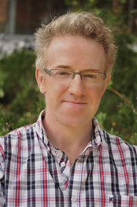
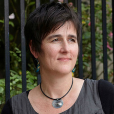
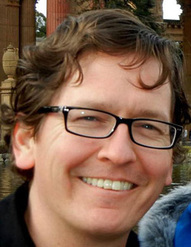

Participant Bios
Bellagio Conference 2014
Below are the names of researchers, funders, industry professionals, philanthropists and entrepreneurs that joined us at our first conference in 2014. Click on their names to jump to their profiles and learn more about them.
ARPANA AGARWAL
Arpana Agarwal has more than 20 years of experience in finance, sustainability, development and emerging markets. She is currently consulting and advising different organisations and businesses, and her experience includes the following: Managing Director at FourWinds Capital Management's Environment Group, investing in Waste and Water companies. Prior to FourWinds, Agarwal was the Global and founding Manager of the Clinton Foundation Pediatric HIV/AIDS Initiative, where she worked to bring access to ARVs, other essential drugs and nutrition to children afflicted with the HIV/AIDS virus across Africa and Asia. After expanding and building the program, she moved to the Clinton Climate Initiative where she worked on the C40 Largest Cities Project to mitigate anthropomorphic climate change in the urban setting. In the private sector, she worked with the Sustainable Business Solutions practice for PricewaterhouseCoopers, finding socially responsible sourcing and governance solutions for large clients across several industries, as well as for Domini Social Investments, one of the first socially responsible investment funds in the US. Agarwal started her post-graduate career with Citibank in emerging markets. She has degrees from UNC Chapel Hill, Columbia University in New York, and the Thunderbird School of Global Management.
Back to top
URMI BAJPAI
DELHI UNIVERSITY
Dr. Urmi Bajpai is a faculty and the founder teacher in-charge of the Department of Biomedical Science, introduced by the University of Delhi at Acharya Narendra Dev College in 1999. She got her PhD degree in Microbiology from the University of Delhi. Her vision and hard work has richly contributed in shaping B.Sc.(Hons) Biomedical Science course. Her focus is on giving hands on training to the students and make them independent learner. She is the pioneer of the Undergraduate research program in the college and has trained about hundred and fifty students since 2007. She has been sanctioned four research projects (funded by Govt of India) with a total grant of Rs. 7.7 Million and has established a well-equipped and modern molecular biology research laboratory. Through crowd sourcing undergraduates, she has developed a repository of gene (75) clones and recombinant proteins (21) of Mycobacterium tuberculosis, the causative organism of Tuberculosis.
Urmi is recognized by the University as a PhD guide. Her research interest is in finding multi-target therapy for tuberculosis. She is currently working on Mur pathway enzymes of Mycobacterium tuberculosis as the targets for discovering new TB drugs. She is also exploring the potential of Mycobacteriophages (a Pilot study) in finding diagnostic and therapeutic solutions to tuberculosis. Here again, by crowd sourcing, an attempt is being made to explore the diversity of Mycobacteriophages in India. Through these research projects, college students not only get trained in the modern techniques but also contribute in building of repositories, useful for the research community.
Dr. Bajpai is invited as a speaker in various national and international platforms on new models of education. She is one of the national coordinators of Tata CSIR OSDD Fellowships and is contributing in a program on improving education in Life Sciences across colleges in India. Urmi has been selected for the meritorious teacher award from Govt of Delhi for year 2014, which includes a citation and cash Prize.
Back to top
JÖRG BENTZIEN
BOEHRINGER-INGELHEIM PHARMACEUTICALS
Jörg Bentzien obtained a PhD in Chemistry from the University of Münster in Germany, working on computational studies of the photochemical [2+2] cycloaddition reaction in the lab of Professor Martin Klessinger. After working with the company Cheops, Münster, on a collaboration with Bayer Cropscience in Monheim, Germany, towards developing methods for lead optimization, he moved to the U.S. to conduct post-doctoral studies in the lab of Nobel Laureate Professor Arieh Warshel at the University of Southern California, Los Angeles. During this time he developed a QM/MM method to study enzymatic reactions. Jörg Bentzien then joined Xencor, Monrovia, California as a computational chemist to work on Protein Design. He is co-inventor of one of the early patents in the field of protein design and co-author on a paper describing a coupled computational and experimental screening approach to improve protein characteristics.
Since 2002 Bentzien is working for Boehringer Ingelheim Pharmaceuticals in Ridgefield, Connecticut, currently holding the position of Principal Scientist in the Structural Research group. Bentzien has worked as a computational chemist in early drug discovery on multiple programs in the areas of Immunology and Inflammation as well as Cardiometabolic Diseases. He developed several workflows for in silico ADMET property predictions widely used throughout the Medicinal Chemistry department. In 2012 Jörg was one of the lead scientists organizing the Boehringer Ingelheim sponsored Kaggle based crowdsourcing challenge on identifying a biological response. Together with David Thompson, Ingo Muegge, and Ben Hamner he published the results and experiences gained during this crowdsourcing challenge in 2013 in Drug Discovery Today.
Back to top
SAMIR BRAHMACHARI
OPEN SOURCE DRUG DISCOVERY
Samir K. Brahmachari is the J. C. Bose National Fellow and the Chief Mentor of Open Source Drug Discovery (OSDD), as well as Professor at the Academy of Scientific and Innovative Research (AcSIR). He served as the Director General of the Council of Scientific and Industrial Research (CSIR) India for over six years (2007-2013) and has simultaneously served as Secretary to the Government of India, Department of Scientific and Industrial Research (DSIR). Brahmachari is also the Founder Director of CSIR-Institute of Genomics & Integrative Biology (IGIB), Delhi (1997-2007).
Brahmachari received his PhD from the Indian Institute of Science in Molecular Biophysics. His scientific research is focused towards the integration of Structural Biology with Genomics, Molecular Biology and Information Science forging towards Integrative Biology with more than 12 patents, 23 copyrights, and over 155 research publications to his credit. Pioneering Functional Genomics research in India, Brahmachari has led the Pan-India Genomics project and has also been instrumental in establishing the Academy of Scientific and Innovative Research (AcSIR) to generate human resource for transdisciplinary research by leveraging the infrastructure and scientific strength of CSIR.
Brahmachari conceptualised and established the Open Source Drug Discovery (OSDD) in 2007 as a collaborative translational research platform with global participation for affordable healthcare and a model for Science 2.0. The OSDD platform facilitates distributed co-creation through crowd sourcing and the application of social media for research. With its unprecedented scale of participation by students and professionals, OSDD aims to not only accelerate drug discovery, but also holds a promise of tremendous and disruptive impact on the economics of drug development for neglected tropical diseases like TB an Malaria.
Back to top
ROBERT DON
DRUGS FOR NEGLECTED DISEASES INITIATIVE
Robert Don joined the Drugs for Neglected Diseases Initiative in 2005 and currently holds overall responsibility for DNDi’s discovery research and preclinical development programs.
Prior to joining DNDi, he was Senior Vice President for Research and Clinical Development at the Australian based biotechnology company, Progen Pharmaceuticals for 10 years. In this position he was responsible the company’s research program to develop new therapeutics for treatment of cancer and guided the development novel anti-cancer agents from basic research to clinical trials in several countries including the United States, United Kingdom, Taiwan, and Australia.
He was awarded his PhD by the University of Queensland in Australia and is a Fellow of the Royal Society of Chemistry. He completed postdoctoral fellowships at the Medical University in Geneva and the New South Wales Cancer Council in Australia followed by a faculty position at the University of Queensland.
Back to top
JALEEL UC
OPEN SOURCE DRUG DISCOVERY
Jaleel .UCA currently works as Principal Investigator of Cheminformatics at the CSIR-OSDD Research Unit of the Indian institute of Science in Bangalore. His focus areas lies in data mining applications in the drug discovery process. He is currently engaged with crowdsourcing, as well as virtual research programs led by Open Source Drug Discovery of India. He is responsible for the Insilico drug discovery research unit at CSIR-OSDD Research Unit, IISc, Bangalore, where any one is free to join and contribute to the designing aspects of a drug for a neglected disease.
Prior to joining OSDD, he was an Assistant Professor of Cheminformatics at the Center for Cheminformatics at MCC, under the University of Calicut. He was awarded his PhD by the University of Calicut, and he is the convener of TATA CSIR-OSDD Fellowships.
Back to top
PETER KOLB
UNIVERSITY OF MARBURG
After studies in Biochemistry and Theoretical Chemistry at the University of Vienna and Karolinska Institute, Kolb did his PhD in Computational Biochemistry with Amedeo Caflisch at the University of Zurich. His work there focused on fragment-based docking for kinase ligands as well as chemoinformatic method development. After a short continuation as a postdoc in the same group, he joined the lab of Brian K. Shoichet at the University of California, San Francisco. This coincided with the publication of the structure of the first pharmaceutically relevant G-protein coupled receptor, a unique opportunity to carry out one of the first studies of xray-structure-based ligand design for this protein class. Besides docking to GPCRs, Kolb worked on the prediction of substrates for enzymes of unknown function, and has as such been contributing to the Enzyme Function Initiative.
Since April 1, 2011, Kolb is Junior Group Leader at Philipps-University Marburg. As of May 2013, he is chairing COST Action CM1207 "GLISTEN: GPCR-Ligand Interactions, Structures, and Transmembrane Signalling: a European Research Network," which brings together more than 150 scientists from 29 European countries.
Back to top
JAYKUMAR MENON
MCGILL UNIVERSITY
Jaykumar Menon is an award-winning international human rights lawyer, a social entrepreneur, and Professor of Practice at the McGill University Institute for the Study of International Development. He focuses on the use of next-generation open innovation approaches (e.g. crowdsourcing, innovation prizes, and open IP) to realize next-generation human rights (e.g. the economic rights to food, water, and health). He has recently pioneered a number of social innovation concepts backed by the international community, with launches by the heads of state of the UK, Australia, and Canada, with total funding of $110+M, aimed at making a large dent in problems affecting over a billion poor people.
He previously led the international development and education programs at the X PRIZE Foundation, an innovation group funded by the founders of Google and Facebook that awards $10+ million incentive prizes to teams that achieve targeted “radical breakthroughs for the benefit of humanity.” He founded X PRIZE’s operations in India, and worked with WFP, the Indian Prime Minister’s Office, the UN Secretary General, and others. He co-authored the DFID-funded “Prize-Driven Innovation for Development,” the leading and pioneering study in the field.
As a human rights lawyer at the New York City-based Center for Constitutional Rights, working alongside activists and community groups, he won a string of victories in high profile and improbable cases. He represented the student leaders of Tiananmen Square against the ex-Premier of China, helped win a $4 billion judgment on behalf of victims of the Bosnian genocide against Radovan Karadzic, helped represent the family of Nigerian environmental activist Ken Saro-Wiwa in a landmark corporations and human rights suit against Royal Dutch Shell ($15M settlement), freed a man from death row in Indiana, and as the fifteenth lawyer to take up the case, hunted through the toughest prisons of New York for the real killer and helped exonerate a man named David Wong who has served over a decade of a life sentence for murder.
As a scholar, he has written articles in top peer-reviewed international human rights law reference journals and books, including those published by the Oxford University Press. As an entrepreneur, he has co-founded a venture-funded Internet company with current seven-figure revenues. He is a published creative writer, having served as an editor of a book published by McSweeney’s, and written a short story in an anthology that collectively won the American Book Award. He has also worked at McKinsey. He holds a JD and a Master of International Affairs from Columbia and completed a BA and one year of medical school at Brown. He hopes to creatively effect large-scale and just social change.
Back to top
BERNARD MUNOS
INNOTHINK AND FASTCURES
Bernard Munos is the founder of InnoThink, a consultancy that focuses on pharmaceutical innovation—specifically, where it comes from and how to get more of it. He was previously an advisor for corporate strategy at Eli Lilly, where he focused on disruptive innovation and the radical redesign of R&D. His research has been published in Nature and Science and profiled by Forbes magazine. FiercePharma named him one of the 25 most influential people in biopharma.
Munos is a Senior Fellow at FasterCures, a Center of the Milken Institute, and he serves on the Advisory Council and the Cures Acceleration Network Review Board of NIH's National Center for Advancing Translational Sciences (NCATS). He is a member of the Institute of Medicine's Forum on Drug R&D and Translation, and an Advisor to the journal Science Translational Medicine. He is also a non-executive Director for Glenmark Pharmaceuticals and several biotech companies, and he advises businesses, nonprofit and government-funded research organizations on being better innovators.
Munos received his M.B.A. from Stanford University and holds graduate degrees in agricultural economics and animal science from the University of California, Davis, and the Paris Institute of Technology for Life, Food and Environmental Sciences. He blogs about pharmaceutical innovation on the Forbes and FasterCures websites.
Back to top
SHERWOOD NEISS
CROWDFUND CAPITAL ADVISORS
Mr. Sherwood Neiss, a principal of Crowdfund Capital Advisors, has a strong track record of building and leading successful companies as a chief financial officer. FLAVORx, Inc., a company Mr. Neiss co-founded, won Ernst & Young’s Entrepreneur of the Year award, as well as the Inc. 500 award three years in a row for building one of the 500 fastest growing private companies in the United States. This company was the June 2003 features story in Inc. Magazine. Mr. Neiss is a serial entrepreneur and investor, and has had a long history of successful investments, raising over $25 million in capital and successfully exited a company he co-founded. In a January 2014 article, VentureBeat listed Mr. Neiss as one of the most influential thought leader in crowdfunding.
Mr. Neiss is in the forefront of the crowdfunding industry. As the co-founder of Crowdfund Capital Advisors (“CCA”), a consulting firm serving certain governments and multi-lateral organizations including the World Bank and Inter-American Development Bank, the governments of Malaysia, Israel, the UAE and Croatia, professional investors, crowdfunding professionals and the entrepreneurial community, Mr. Neiss has a thorough understanding of the industry. He currently serves as the co-founder for the Innovation in Entrepreneurial Social Finance program through the College of Engineering at the University of California, Berkeley.
As a serial entrepreneur and investor during the 2008 financial crisis, Mr. Neiss saw a need for a change in outdated securities laws. Mr. Neiss co-authored the “Crowdfunding Exemption Framework” which became the basis of Title III of the JOBS Act to legalize the “equity-based” and “lending-based” crowdfunding. He and his co-authors worked closely with the White House, U.S. Senate and House of Representatives to pass crowdfunding legislation. He was honored to attend the White House ceremony when President Obama signed the JOBS Act into law in the Rose Garden on April 5, 2012. He has testified three times before the U.S. Congress (both House and Senate) and presented at the SEC and FINRA.
CCA has worked in over 20 countries on six continents with investors, entrepreneurs, multi-lateral organizations and governments regarding infrastructure, regulatory and capacity building projects to reduce early-stage finance challenges and effectively utilize crowdfunding to create successful ventures, innovation and jobs. Mr. Neiss co-authored the World Bank’s research report “Crowdfunding’s Potential for the Developing World” and is also the co-author of “Crowdfund Investing for Dummies” published by Wiley & Son’s and contributed a chapter for “Crowdfunding – A Guide to Raising Capital on the Internet” published by Bloomberg.
Mr. Neiss serves on the advisory boards of several crowdfunding companies. He is a co-founder and former-board member of the Crowdfunding Professional Association. He is also a co-founder of the Crowdfunding Intermediary Regulatory Advocates. In 2012, Mr. Neiss was selected as a recipient of the Crowdfunding Visionary Award and received special recognition at the 2012 Fortune Magazine Leadership Conference.
An avid public speaker, Mr. Neiss speaks at universities and seminars around the world discussing crowdfund investing, entrepreneurship and how to build successful companies. Some of Mr. Neiss’s speaking engagements have included: South by Southwest, the Global Entrepreneurship Summit in Dubai and Kuala Lumpur, the World Bank InfoDev Funder’s Meeting in Kenya, MIT Entrepreneur Summit in Istanbul, Amplify Festival in Sydney, Harvard Business School, the U.S. Treasury, the United Nations Global Compact Leaders Summit, the Angel Capital Association, and the World Economic Forum.
In June 2013, Entrepreneur Magazine featured CCA in its Innovator’s Series. Mr. Neiss has appeared on Bloomberg, CNN, MSNBC, and CNBC Asia. He has also been interviewed by Fast Company, Bloomberg, Fortune, Forbes, Inc. Magazine, Politico, Washington Post, Wall Street Journal. He is a contributor to TechCrunch and VentureBeat. He holds an MBA in International Finance.
Back to top
PIERO OLLIARIO
WORLD HEALTH ORGANIZATION
Piero Olliaro received his MD, PhD, and post-graduation in infectious diseases at the University of Pavia in Italy and his HDR (habilitation à diriger les recherches) at the Université Joeseph Fourier in Grenoble, France. He is a member of the French Academy of Medicine.
He is the head of Intervention and Implementation research at the UNICEF/UNDP/World Bank/WHO Special Programme for Research and Training in Tropical Diseases (TDR), and Newton-Abraham visiting professors for 2014-2015 with the Centre for Tropical Medicine, Nuffield Department of Medicine, University of Oxford, and is a fellow of Lincoln College.
He has been with TDR since 1993, covering different functions in research and capacity building. Before joining TDR he had worked as general practitioner, hospital consultant, and as bench and clinical researcher in academia and the pharmaceutical private sector.
Through this range of experiences he embraced laboratory, pharmacology, clinical and field research in several poverty-related infectious diseases. Some of his main achievements include contributions to: the establishment of artemisinin combination therapy and the development of artesunate-amodiaquine and artesunate-mefloquine for malaria; the development of rifabutin for tuberculosis; paromomycin and various combination therapies for visceral leishmaniasis; the provision of evidence for various policy and guidelines through systematic reviews and meta-analyses; the establishment of the Drug for Neglected Diseases initiative (DNDi) and the Europe and Developing Countries Clinical Trial Partnership (EDCTP). Current areas of work include tuberculosis, malaria, leishmaniasis, helminths and dengue.
He is the author of over 255 papers, has chaired and participated in several international symposia and has been a member or chair of various scientific committees and study drug and safety monitoring boards. He is an editor of the Cochrane Infectious Diseases Group. Honorary affiliations include a visiting professorship with Oxford University and a research fellowship with the Liverpool School of Tropical Medicine since 2001.
Back to top
MELINDA RICHTER
JANSSEN LABS/JOHNSON & JOHNSON
As Head of Janssen Labs, Melinda Richter fosters Johnson & Johnson’s external R&D engine and supports the innovation community by creating capital-efficient commercialization models. This approach gives early stage companies a big company advantage by providing infrastructure, services, educational programs and networks in global hotspots. Previous to this position, Richter was Founder and CEO of Prescience International, a firm dedicated to accelerating research to the patient. Prior, Richter held posts across a variety of functional areas with a global corporation, Nortel Networks. She holds a Bachelor of Commerce from the University of Saskatchewan and an MBA from INSEAD in France. Richter is also on the Industrial Advisory Board of the Whitaker Center for Biomedical Engineering at the University of California, San Diego.
Back to top
 TOMASZ SABLINSKI
TOMASZ SABLINSKITRANSPARENCY LIFE SCIENCES
Tomasz Sablinski is CEO of Transparency Life Sciences (TLS), which he founded in 2010 as the world’s first drug development company based on open innovation. TLS is leveraging the information technology and knowledge networking revolutions to transform drug development.
Sablinski brings more than 15 years of experience in the design and execution of global clinical trials to TLS, as well as over 30 years as a medical practitioner and researcher. He held positions of increasing responsibility managing clinical research activities at Novartis, including directing units in the US, Europe, and Japan. Sablinski completed his tenure at Novartis as Vice President, U.S. Clinical Development and Medical Affairs Therapeutic Area Head. Earlier in his career, Sablinski practiced transplant surgery and conducted pioneering work in immunosuppressive drug development at Harvard Medical School, where he was also an Instructor. Before moving to the U.S., Sablinski was a transplant and general surgeon in Warsaw, Poland, and a Senior Lecturer at Warsaw Medical School. He is a co-author of more than 50 peer-reviewed publications. Sablinski received MD and PhD degrees from the Academy of Medicine in Warsaw and completed a fellowship at Harvard Medical School. In addition to his role at TLS, Sablinski is currently Managing Director and Head of Development at the private equity drug development firm Auven Therapeutics.
Back to top
 ZAKIR THOMAS
ZAKIR THOMASOPEN INNOVATION EXPERT
Zakir Thomas has a passion for affordable healthcare, specifically for neglected diseases. He has expertise in legal matters with a specific focus on intellectual property, an understanding of the innovation ecosystem in science and technology in India, e-governance, and project management. He has implemented large projects in complex environments.
He was the founding Project Director of Open Source Drug Discovery (OSDD) of the Council of Scientific and Industrial Research (CSIR) in India, where he led an open innovation drug discovery programme for tuberculosis (TB). He led this programme from its inception to the launch of its first clinical trials of a novel TB regimen, coordinating various activities from early stage research to the development of new drugs. He was also the head of the Director General’s Technical Cell, leading a team which provided technical and policy inputs to CSIR, including intellectual property issues for CSIR, which files the largest number of U.S. patents among publicly funded institutions in India.
He was the Registrar of Copyrights of Government of India from 2000-2003 and a Deputy Secretary in the Department of Higher Education of the Ministry of Human Resources Development. He has several publications in the field of intellectual property and has been identified by third party studies as one of the most prolific authors of the Journal of Intellectual Property, a peer-reviewed journal.
Professionally, he is an officer of the Indian Revenue Service with over 25 years of experience, currently posted as Commissioner of Income Tax at Delhi. He has worked in multicultural settings in the government of India in the Ministries of Finance, Science and Technology and Human Resources Development, in the fields of intellectual property, science and technology, e-governance and in policy formulation in those areas. He was part of the Income Tax Department team that implemented major e-governance projects, such as Permanent Account Number and Change Management. He has experience in implementing public-private partnership projects.
He holds an MSc in Physics (Mahathma Gandhi University, Kerala), LLB (Delhi University), and a Masters in Intellectual Property, Commerce and Technology (Franklin Pierce Law Centre, University of New Hampshire in the U.S.)
Back to top
 MATTHEW TODD
UNIVERSITY OF SYDNEY AND OPEN SOURCE MALARIA
Matthew Todd was born in Manchester, England. He obtained his PhD in organic chemistry from Cambridge University in 1999, was a Wellcome Trust postdoc at The University of California, Berkeley, a college fellow back at Cambridge University, a lecturer at Queen Mary, University of London and since 2005 has been at the School of Chemistry, The University of Sydney where he is Associate Professor.
His research interests include the development of new ways to make molecules, particularly how to make chiral molecules with new catalysts. He is also interested in making metal complexes that do unusual things when they meet biological molecules or metal ions. His lab motto is "To make the right molecule in the right place at the right time", and his students are currently trying to work out what this means.
He has a significant interest in open science, and how it may be used to accelerate research, with particular emphasis on open source discovery of new medicines. He founded and currently leads the Open Source Malaria (OSM) consortium. In 2011 he was awarded a NSW Scientist of the Year award in the Emerging Research category for his work in open science and in 2012 the OSM consortium was awarded one of three Wellcome Trust/Google/PLoS Accelerating Science Awards. He is on the Editorial Boards of PLoS One, Chemistry Central Journal, ChemistryOpen and Nature Scientific Reports. He is a Sydney Ambassador of the Open Knowledge Foundation.
Back to top
 ELS TORREELE
OPEN SOCIETY FOUNDATIONS
Els Torreele is director of the Access to Essential Medicines Initiative for the Open Society Public Health Program. Torreele graduated as a bioengineer and obtained a Ph.D. in applied biological sciences from the Free University Brussels. As a research and development coordinator at the Flanders Interuniversity Institute for Biotechnology, she worked on policy issues related to biomedical research agenda-setting, patenting of research findings, and the commercialization of biotechnology research.
Torreele joined the Médecins Sans Frontières Access to Essential Medicines Campaign in its pioneering years as chair of the Drugs for Neglected Diseases Working Group, a think tank to come up with new ideas to foster needs-driven research and development of treatments for diseases that primarily affect developing countries. A key outcome of this group was the creation in 2003 of the Drugs for Neglected Diseases initiative (DNDi), a nonprofit drug development organization which she joined as a founding team member. At DNDi, Torreele was responsible for several research and development projects from discovery through clinical trials, including capacity strengthening for research in endemic countries, and international advocacy for increased research and development for neglected diseases.
She joined OSF in 2009 to lead their Access to Medicines work, focusing on advancing health and human rights though social inclusion, transparency, accountability, and participation and supporting civil society voices in national, regional and global policy making that shapes access to medicines and biomedical innovation.
Back to top
DIMITRIOS TZALIS
EUROPEAN LEAD FEDERATION
Dimitrios Tzalis holds a PhD from the University of California, San Diego, an MS in Chemistry from the University of Chicago, and an MS in Biology from Ball State University. He received his Vordiplom from Philipps University in Marburg, Germany in 1992. He was awarded the Nathan Sugarman Award for Excellence in Teaching Organic Chemistry from the University of Chicago. After his postdoc at the Philipps University, he started Taros in 1999 and has been active as a serial biotech entrepreneur ever since. He has published 13 articles and holds 4 patents. Tzalis is currently leading the Chemistry Consortium of the €196m pan-European drug discovery project,European Lead Factory, and is a member of its Project Executive and Project Management Board.
Back to top
 JOHN WILBANKS
SAGE BIONETWORKS
John Wilbanks is also a Senior Fellow at FasterCures.
He has worked at Harvard’s Berkman Center for Internet & Society, the World Wide Web Consortium, the US House of Representatives, and Creative Commons. Wilbanks is a past affiliate of MIT’s Project on Mathematics and Computation and also started a bioinformatics company called Incellico, which is now part of Selventa. He advises the National Coordination Office’s NITRD program, sits on the Board of Directors for Impact Story and the TransMART Foundation, and sits on Advisory Boards for Boundless Learning, Curious, GenoSpace, and Patients Like Me. Wilbanks holds a degree in Philosophy from Tulane and studied modern letters at the Sorbonne. Back to top Back